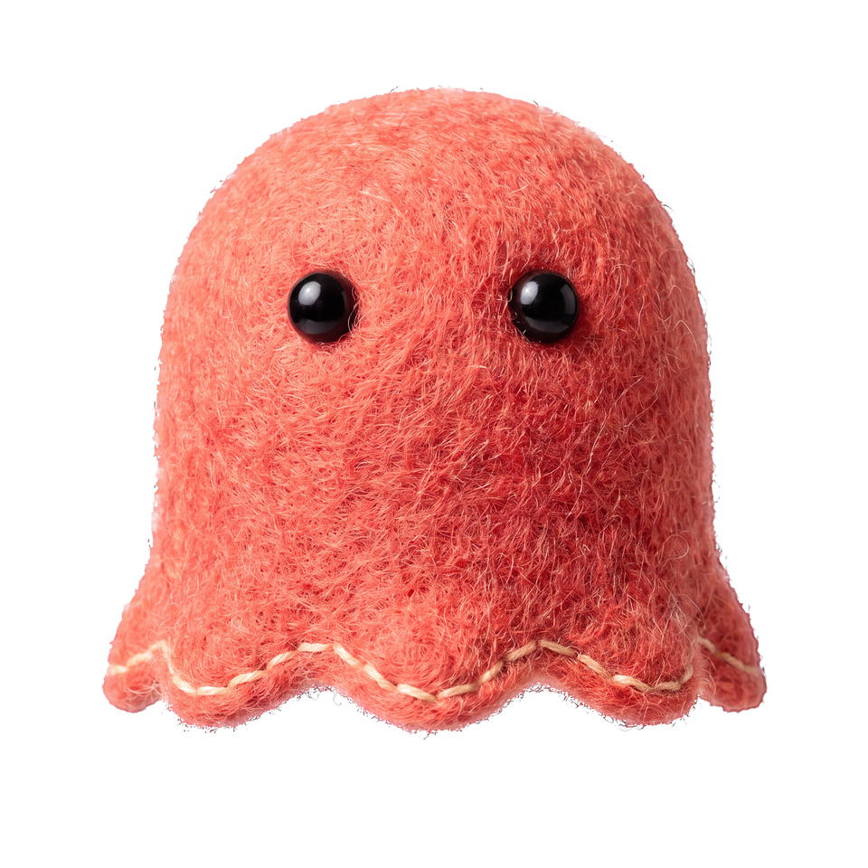

SYNK SHIFT 제작 가이드 01
AI 캐릭터 영상,
먼저 고정할 세 가지
‘귀엽게 움직여 줘’라는 말에 원본과 경계를 더해 보세요. 무엇을 바꿀지뿐 아니라 무엇을 남길지도 적는 방법입니다. SYNK의 몽글 제작에서 가져온 기준을, 자기 작업에 고쳐 쓸 수 있도록 정리했습니다.

01 — Set the boundaries
움직일 것보다 먼저,
지킬 것을 정합니다.
결과를 보고 ‘뭔가 달라졌다’고 느낄 때, 다시 확인할 기준을 만드는 일입니다. 다음 세 가지를 함께 적어 보세요.
원본을 함께 보냅니다
기준으로 삼을 이미지 한 장을 정합니다. 같은 캐릭터인지 판단할 수 있도록, 비교할 원본을 결과와 함께 남깁니다.
이 이미지를 기준으로 작업해 주세요.
바꿀 곳을 좁힙니다
눈 주변처럼 이번에 바꿀 영역을 구체적으로 적습니다. 표정 하나를 바꿀 때 몸 전체가 새로 만들어지지 않도록 범위를 나눕니다.
이번에는 눈 주변만 움직이게 해 주세요.
유지할 것을 적습니다
털, 몸의 형태, 색, 조명과 배경 중 지킬 것을 적습니다. 글자가 읽히는 상태와 움직임이 끝난 뒤의 정지도 함께 요청합니다.
털, 몸의 형태, 색, 조명과 배경은 보존해 주세요.
02 — Look at the result
원본을 지키며,
깜빡임을 마감합니다.
원본에 눈을 붙인 중간 결과에서, 눈 주변의 연결을 한 번 더 다듬었습니다. 몸과 털은 같은 바탕에 두고, 이번에 개선한 깜빡임을 직접 살펴보세요.
원본 이미지 · 움직임을 불러오면 같은 자리에서 시작합니다.
{kind=link}
{kind=link}
03 — Make it your own
내 이미지에 맞춰
고쳐 쓸 요청문.
원본 이미지를 함께 보내고, ‘눈 주변’과 보존할 항목을 자신의 작업에 맞게 바꿔 보세요.이 가이드를 위해 새로 정리한 예시입니다. 당시 AI에 입력한 문장을 인용한 것이 아니며, 결과를 보장하는 명령어도 아닙니다.
이 이미지를 기준으로 작업해 주세요. 털, 몸의 형태, 색, 조명과 배경은 보존해 주세요. 이번에는 눈 주변만 움직이게 해 주세요. 읽어야 할 글자는 움직이지 않게 해 주세요. 움직임이 끝나면 자연스럽게 정지하게 해 주세요. 결과는 원본과 같은 크기, 같은 배경에서 비교할 수 있게 보여 주세요.
새 요청 예시 · 원본과 목적에 맞게 수정해 사용하세요.
04 — Review once more
만든 다음에는,
세 곳을 다시 봅니다.
정지 이미지로 알 수 있는 것과, 직접 재생해야 알 수 있는 것을 나눕니다. 확인한 차이를 다음 요청에 더해 보세요.
같은 크기에서
바뀐 눈뿐 아니라 주변의 털과 몸의 윤곽, 색이 이어지는지 살핍니다. 한쪽을 작게 줄이면 차이가 가려질 수 있습니다.
문장을 읽으며
실제 움직임을 재생하면서 안내 문장을 끝까지 읽어 봅니다. 배경과 캐릭터가 글자를 읽는 데 방해되지 않는지 확인합니다.
끝나는 순간까지
시작 장면에서 멈추지 않고, 움직임이 잦아들어 다시 머무는 순간까지 봅니다. 끝에서 갑자기 원래 자리로 튀지 않는지도 확인합니다.